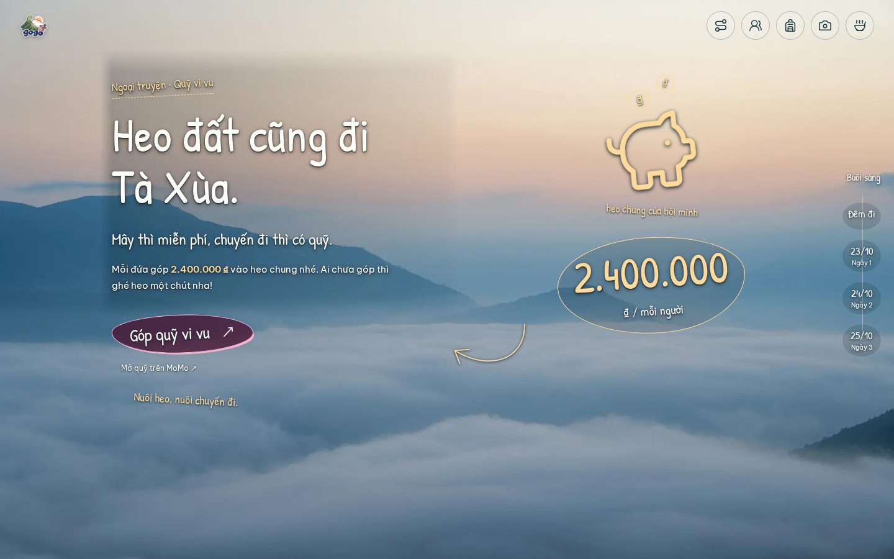
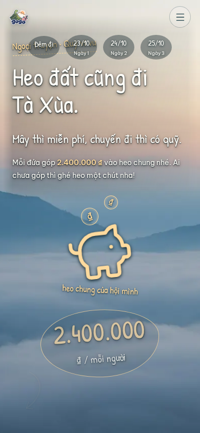

Open the fund epilogue · Fund acceptance results · Website review
A transparent, handwritten invitation immediately after the journey home. The amount is 2.400.000 ₫ per person, with a link to the supplied MoMo fund. Coins, the pig and the amount reveal and retreat with scrolling; the invitation stays steady while reading.


Additional layouts: 320 px phone · Landscape · Tablet · Wide desktop.
155 Chromium checks cover exact contribution/link, placement, transparent containers, forward/reverse motion, pauses, keyboard access, new-tab behavior, responsive and enlarged-text layouts, reduced motion, missing GSAP, direct-file use, print and the no-JavaScript reading copy. Recordings include physical forward/reverse scroll near the end. MoMo clicks are intercepted locally for verification; no contribution is submitted.